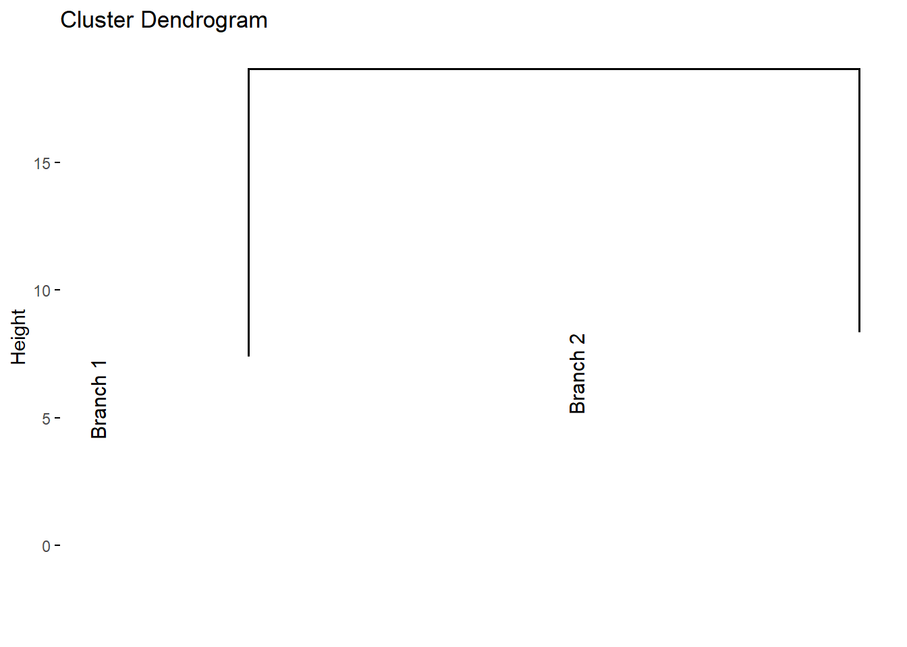

9.2 Eksperimen
Read Data
library (readr)
urlfile = "https://bit.ly/3VO3kRE"
data<-read.csv(url(urlfile), row.names = "Kabupaten")| X1 | X2 | X3 | X4 | X5 | X6 | X7 | X8 | X9 | X10 | |
|---|---|---|---|---|---|---|---|---|---|---|
| CILACAP | 5.19 | 5.67 | 5.08 | 5.44 | 5.22 | 6.05 | 11.47 | 9.78 | 5.55 | 5.12 |
| BANYUMAS | 5.71 | 4.47 | 5.18 | 5.51 | 5.02 | 6.21 | 7.39 | 6.96 | 5.98 | 8.22 |
| PURBALINGGA | 3.30 | 2.19 | 3.80 | 3.13 | 3.73 | 3.34 | 8.71 | 7.41 | 3.21 | 4.65 |
| BANJARNEGARA | 2.73 | 2.34 | 3.76 | 2.80 | 2.57 | 2.99 | 3.31 | 5.45 | 4.21 | 6.05 |
| KEBUMEN | 4.17 | 2.55 | 3.26 | 4.16 | 3.15 | 4.15 | 4.30 | 9.29 | 4.61 | 4.34 |
| PURWOREJO | 1.87 | 2.12 | 1.48 | 3.05 | 1.78 | 1.83 | 5.00 | 4.90 | 3.12 | 2.09 |
| WONOSOBO | 2.13 | 1.95 | 3.00 | 1.78 | 1.62 | 2.06 | 0.45 | 2.32 | 3.57 | 0.84 |
| MAGELANG | 3.95 | 3.01 | 4.22 | 4.15 | 3.01 | 3.64 | 1.44 | 3.35 | 5.69 | 3.67 |
| BOYOLALI | 2.19 | 3.07 | 1.61 | 2.74 | 2.11 | 1.82 | 1.71 | 2.34 | 3.41 | 1.55 |
| KLATEN | 3.84 | 5.15 | 1.93 | 4.64 | 4.04 | 3.78 | 8.71 | 4.45 | 3.99 | 3.09 |
Standarisasi Data
Pertama, kita menghitung jarak antar kabupaten menggunakan fungsi dist(). Dalam hal ini, kita menggunakan metode jarak Euclidean. Sebelum menghitung jarak, data dinormalisasi dengan fungsi scale(), yang memastikan bahwa setiap variabel memiliki rata-rata 0 dan deviasi standar 1. Normalisasi ini penting untuk menghindari bias yang mungkin disebabkan oleh skala variabel yang berbeda.
Pengelompokan Data
Setelah menghitung jarak, langkah selanjutnya adalah melakukan pengelompokan menggunakan metode hirarki dengan fungsi hclust(). Dalam hal ini, kita menggunakan metode Ward.D2, yang bertujuan untuk meminimalkan varians dalam setiap kluster yang terbentuk. Metode ini sangat efektif dalam menghasilkan kluster yang lebih homogen.
Visualisasi Dendogram
Visualisasi dendogram adalah alat penting dalam analisis kluster hirarki, yang memungkinkan kita untuk memahami struktur dan hubungan antar kelompok dalam data. Dalam konteks ini, kita menggunakan paket R factoextra dan dendextend untuk menghasilkan dan memodifikasi dendogram dari hasil analisis kluster. Kita dapat menggunakan fungsi fviz_dend() dari paket factoextra di R untuk membuat dendrogram dengan mudah, baik menggunakan plot bawaan R atau melalui ggplot2.
Dalam analisis kluster hirarki, visualisasi dendogram adalah alat yang sangat berguna untuk memahami struktur dan hubungan antar objek dalam dataset. Dalam contoh ini, kita menggunakan fungsi fviz_dend() untuk menghasilkan dendogram berdasarkan hasil klustering yang dilakukan dengan metode Ward.D2.
library(factoextra)
fviz_dend(hasil_cluster, cex = 0.5,
main = "Dendrogram - ward.D2",
xlab = "Objects", ylab = "Distance", sub = "")Gambar 9.1: Visualisasi Dendogram
Untuk membuat visualisasi dendrogram dengan orientasi horizontal.
Gambar 9.2: Visualisasi Dendogram Horisontal
Pohon dendrogram dapat dipotong pada ketinggian tertentu untuk membagi data menjadi beberapa kelompok. Dalam hal ini, cabang dapat diberi warna sesuai dengan kelompoknya, dan kotak dapat ditambahkan untuk menyoroti setiap kelompok. Kode ini digunakan untuk membuat dendrogram dengan pemotongan menjadi empat kelompok, memberikan warna pada cabang dan label berdasarkan kelompok, serta menambahkan kotak di sekitar setiap kelompok.
Untuk memberikan warna yang berbeda pada masing-masing kelompok dalam dendrogram, dapat dilakukan dengan menggunakan parameter k_colors pada fungsi fviz_dend dari paket factoextra. Parameter ini memungkinkan pengguna untuk menentukan warna yang akan digunakan untuk setiap klaster. Misalnya, pada kode berikut, dendrogram dipotong menjadi empat kelompok (k = 4), dan masing-masing kelompok diberi warna spesifik: biru (#2E9FDF), hijau (#00AFBB), kuning (#E7B800), dan oranye (#FC4E07). Selain itu, parameter color_labels_by_k = TRUE memastikan bahwa label pada dendrogram juga diberi warna sesuai dengan kelompoknya, sehingga visualisasi menjadi lebih informatif dan mudah untuk diinterpretasikan.
fviz_dend(hasil_cluster,
k = 4,
cex = 0.5,
k_colors = c("#2E9FDF", "#00AFBB", "#E7B800", "#FC4E07"),
color_labels_by_k = TRUE)Gambar 9.3: Visualisasi Dendogram 4 Kelompok
Parameter k_colors dapat menggunakan berbagai palet warna, termasuk palet dari paket RColorBrewer (contoh: “RdBu”, “Blues”, “Dark2”, “Set2”, dan sebagainya) serta palet warna bertema jurnal ilmiah yang tersedia di paket ggsci (contoh: “npg”, “aaas”, “lancet”, “jco”, “ucscgb”, “uchicago”, “simpsons”, dan “rickandmorty”).
Gambar 9.4: Visualisasi Dendogram
Kode ini digunakan untuk memvisualisasikan dendrogram hasil analisis klaster hierarkis dengan memotongnya menjadi empat kelompok (k = 4). Visualisasi dilakukan secara vertikal (horiz = FALSE), dengan ukuran label yang lebih kecil (cex = 0.4) untuk meningkatkan keterbacaan. Warna klaster dan batas persegi yang mengelilingi kelompok diatur menggunakan palet “jco” dari paket ggsci (k_colors = "jco" dan rect_border = "jco"). Persegi yang mengelilingi setiap klaster juga diisi dengan warna kelompok masing-masing (rect_fill = TRUE). Hasilnya adalah dendrogram yang estetis dan mudah diinterpretasikan, dengan kelompok-kelompok yang ditampilkan secara jelas dan terorganisasi.
fviz_dend(hasil_cluster, k=4, cex = 0.4, horiz = FALSE, k_colors = "jco",
rect = TRUE, rect_border = "jco", rect_fill = TRUE)Gambar 9.5: Visualisasi Dendogram
Kode ini digunakan untuk memvisualisasikan dendrogram hasil analisis klaster hierarkis dalam bentuk melingkar (type = "circular"). Dendrogram dipotong menjadi empat kelompok (k = 4), dan setiap klaster diberi warna menggunakan palet “jco” dari paket ggsci (k_colors = "jco"). Ukuran label pada dendrogram diatur menjadi lebih kecil (cex = 0.5) untuk memastikan keterbacaan. Dengan bentuk melingkar, visualisasi ini memberikan tampilan yang estetis dan inovatif untuk analisis klaster, mempermudah identifikasi hubungan antar-objek dalam klaster.
Gambar 9.6: Visualisasi Dendogram Bentuk Melingkar
Kode ini digunakan untuk memvisualisasikan dendrogram hasil analisis klaster hierarkis dalam bentuk pohon filogenetik (type = "phylogenic") menggunakan fungsi fviz_dend dari paket factoextra. Dendrogram dipotong menjadi empat klaster (k = 4), dan setiap klaster diberi warna menggunakan palet “jco” dari paket ggsci (k_colors = "jco").
Parameter repel = TRUE digunakan untuk mengatur posisi label agar tidak saling bertumpukan, sehingga meningkatkan keterbacaan visualisasi. Paket igraph diperlukan untuk mendukung visualisasi pohon filogenetik ini. Hasil akhirnya adalah dendrogram yang menyerupai struktur pohon, cocok untuk menganalisis hubungan hierarkis dengan tampilan yang rapi dan informatif.
require("igraph")
fviz_dend(hasil_cluster, k=4, k_colors = "jco",
type = "phylogenic", repel = TRUE)Gambar 9.7: Visualisasi Dendogram Bentuk Filogenetik
Kode ini digunakan untuk memvisualisasikan dendrogram hasil analisis klaster dan mengekstrak data dendrogram untuk pemrosesan lebih lanjut. Pertama, dendrogram divisualisasikan dengan memotongnya menjadi empat kelompok (k = 4) dan menggunakan palet warna “jco” untuk setiap klaster. Ukuran label ditentukan sebesar 0.5 (cex = 0.5).
Selanjutnya, data dendrogram diekstrak dari objek plot menggunakan attr(dend_plot, "dendrogram"). Kemudian, dendrogram dipotong pada ketinggian tertentu (h = 10) dengan menggunakan fungsi cut(), yang menghasilkan dua cabang utama.
Terakhir, visualisasi dilakukan pada bagian atas dendrogram yang telah dipotong dengan menampilkan hanya cabang-cabang tersebut menggunakan fviz_dend(dend_cuts$upper). Hasilnya adalah dendrogram yang lebih sederhana, menampilkan dua cabang utama berdasarkan pemotongan pada ketinggian tertentu.
dend_plot <- fviz_dend(hasil_cluster, k=4,
cex = 0.5,
k_colors = "jco"
)
dend_data <- attr(dend_plot, "dendrogram")
dend_cuts <- cut(dend_data, h=10)
fviz_dend(dend_cuts$upper)
Kode ini digunakan untuk menampilkan dendrogram secara keseluruhan yang telah disiapkan sebelumnya. Dengan menggunakan print(dend_plot), visualisasi dendrogram yang telah dihasilkan oleh fungsi fviz_dend akan ditampilkan. Dendrogram ini menunjukkan hasil klasterisasi dengan empat kelompok (k = 4) dan diberi warna berdasarkan palet “jco”, dengan ukuran label yang diatur menjadi 0.5 (cex = 0.5).

Gambar 9.8: Visualisasi Dendogram
Kode ini digunakan untuk memvisualisasikan salah satu cabang bawah dari dendrogram yang telah dipotong sebelumnya. Dengan menggunakan fviz_dend(dend_cuts$lower[[1]], main = "Subtree 1"), visualisasi akan menampilkan cabang pertama dari bagian bawah dendrogram yang telah dipotong pada ketinggian h = 10. Judul “Subtree 1” akan ditambahkan untuk menandai bagian ini, memudahkan interpretasi bagian tertentu dari hasil klasterisasi.

Gambar 9.9: Visualisasi Dendogram Subtree 1
Kode ini digunakan untuk memvisualisasikan cabang kedua dari dendrogram yang telah dipotong sebelumnya. Dengan menggunakan fviz_dend(dend_cuts$lower[[2]], main = "Subtree 2"), visualisasi akan menampilkan cabang kedua dari bagian bawah dendrogram yang telah dipotong pada ketinggian h = 10. Judul “Subtree 2” akan ditambahkan untuk mempermudah identifikasi bagian ini, sehingga hasil klasterisasi dapat dianalisis dengan lebih detail pada cabang kedua tersebut.
Gambar 9.10: Visualisasi Dendogram Subtree 2